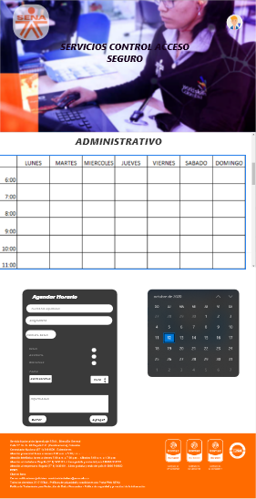
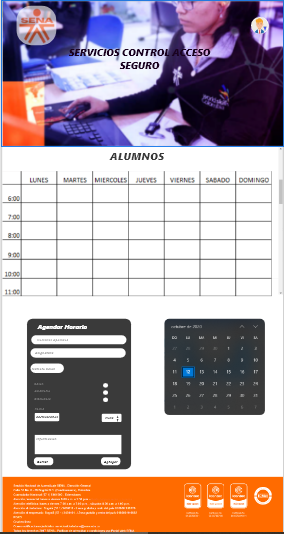
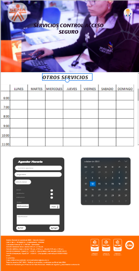
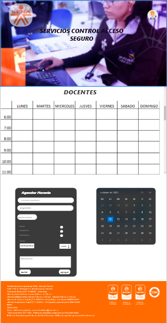
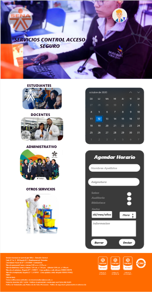

En los centros de formación complejo CEET (SENA) no cuentan con un sistema de acceso seguro de los aprendices, docentes y personal administrativo al CEET y a cada una de las instalaciones que cuenta el Sena, también no hay un registro de horarios de ingreso para el uso del desarrollo de las competencias.
Diseñar un sistema de seguridad con el cual se garantice un control de acceso seguro y un control de horarios para los aprendices, docentes y personal administrativo.
-Utilizar los conocimientos que tenemos sobre la infraestructura de seguridad en el CEET para
aplicarlos con eficiencia y efectividad.
-Generar la verificación de la identidad del personal a ingresar al CEET por medio de Usuarios únicos
asignados por la plataforma.
-Llevar un control de los usuarios que permita minimizar errores como la suplantación de datos o la
duplicación de estos mismos.
-Identificación de los horarios del personal a ingresar por reconocimiento en sus actividades.
-Monitorear el cumplimiento de los requisitos que se aplican en cada área.
|  |  | |
|  |  |  |